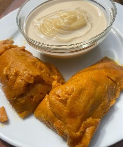

M - m
 Marúgbó n. A Yoruba soup made from black seed leaves.[máɹúg͡bó] mo ní márúgbó sílé I have black leaves soup at home.
Marúgbó n. A Yoruba soup made from black seed leaves.[máɹúg͡bó] mo ní márúgbó sílé I have black leaves soup at home.
 |
 Mọ́ínmọ́ín n. [mɔ́ĩ́mɔ́ĩ́] Moin moin is a popular Nigerian dish made from steamed blended beans. It is a nutritious, protein-rich pudding from southwestern Nigeria. Mọ́ínmọ́ín jẹ́ èròjà óúnjẹ tó dáa tí a fi ẹ̀wà ṣe. Mọ́ínmọ́ín is a healthy food made from beans.
Mọ́ínmọ́ín n. [mɔ́ĩ́mɔ́ĩ́] Moin moin is a popular Nigerian dish made from steamed blended beans. It is a nutritious, protein-rich pudding from southwestern Nigeria. Mọ́ínmọ́ín jẹ́ èròjà óúnjẹ tó dáa tí a fi ẹ̀wà ṣe. Mọ́ínmọ́ín is a healthy food made from beans.
 |